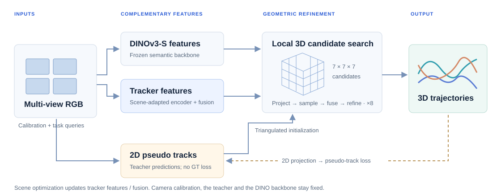
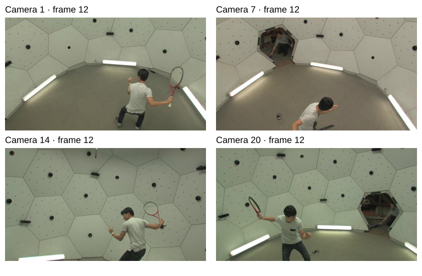
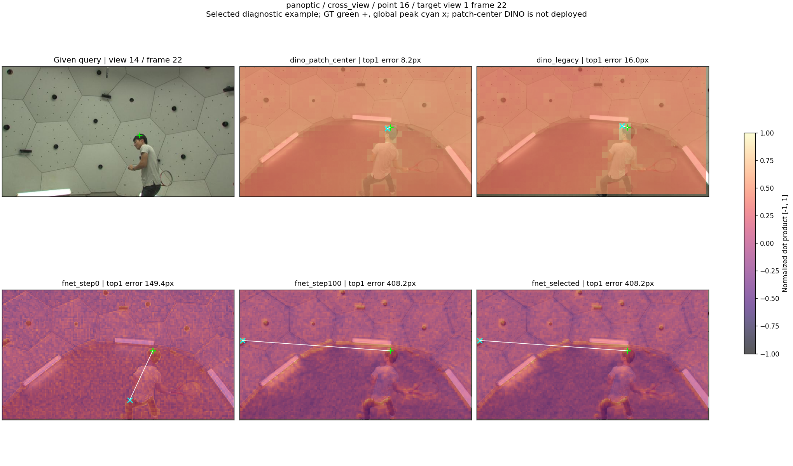
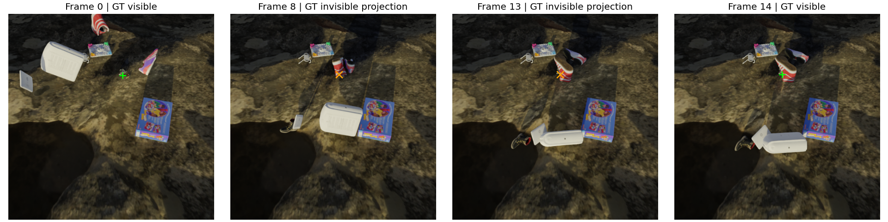

DINO FEATURES · MULTI-VIEW GEOMETRY · TEST-TIME OPTIMIZATION
DINO·MVTrack
Multi-View 3D Point Tracking
via Unsupervised Test-Time Optimization
From synchronized views to shared 3D trajectories.
Adapt a tracker to a scene using 2D pseudo tracks and frozen visual features.
Can a tracker adapt to a multi-view scene without optimizing against ground-truth trajectories? We combine semantic features from a frozen DINO backbone with scene-adapted tracking features, use calibrated cameras to connect views, and refine 3D point trajectories through test-time optimization.
The optimization objective uses 2D pseudo tracks. Our current evaluation also includes GT-conditioned data preparation and a separate GT-selected checkpoint diagnostic. These choices are explicitly separated below; the complete pipeline is not claimed to be GT-free.
Adapt in 2D. Track in 3D.
Appearance cues and calibrated geometry meet in a local 3D search.
Swipe the diagram to explore the full pipeline →

{kind=link}
Connect the views
Synchronized RGB, camera calibration and task queries provide the inputs. Multi-view pseudo tracks support triangulated initialization.
Fuse complementary features
Frozen DINOv3-S features complement adapted tracker features. Project local 3D candidates into each camera to sample matching evidence.
Optimize for the scene
Refine trajectories with a 7³ candidate lattice and eight internal iterations. The scene objective supervises 2D projections with pseudo tracks.
View the actual synchronized inputs

Calibrated RGB input; these images are from the sequence shown above. Camera calibration is an input, not estimated by the tracking model.
Human motion. Manipulation. Synthetic scenes.
Explore sparse, accurate trajectories across four synchronized views.
The four-point clips use fixed GT-selected points with low error across their active trajectories and GT motion greater than 5 cm. The Panoptic clip uses the six-point selection described below. All original frames and query times are retained. These are selected examples, not population-level results. Scene, point & prediction provenance ↗
See what changes, point by point.
Paired predictions on the same point, camera, frames and fixed crop.
A trajectory that stays close to GT
Panoptic tennis, point 364. Selected for low absolute 3D error across the active trajectory; maximum error is approximately 1.6 cm, including the query frame.
Mean 3D coordinate error for this point, on GT-visible post-query frames. This is not a dataset-level result.
Pseudo-selected model · GT-selected example. Mixed point cohort. All 24 frames are retained. Coordinates remain visible when the model predicts occlusion; the video reports that visibility flag.
Showcase points were selected to stay close to GT; median and failure examples remain separate diagnostic views. All presentation choices use GT errors. “Median” refers only to eligible points within the shown scene. No selected example is used as an estimate of overall performance. Case identities & source hashes ↗
Where do the features find a match?
Full-image responses reveal complementary matching cues.

Green +: GT. Cyan ×: actual global maximum, with the same normalized dot-product scale [−1, 1] in every panel. Click the figure to inspect full resolution.
Selected feature diagnostic. These historical probes illustrate complementary responses, not a causal trajectory ablation. The DINO patch-center mapping is a diagnostic variant and is not the deployed sampling rule. Results do not establish better overall occlusion tracking; tracker features can outperform DINO in other cases and at intermediate training stages.
Inspect the annotated reappearance timeline

The target returns to annotated visibility at frame 14. This selection uses GT visibility; it does not prove recognition of the hidden point’s physical identity.
What changes when a component changes?
Earlier development configuration · one clip from each dataset
AJ is plotted on a fixed 0–100 scale. MTE is in cm (lower is better). Download all 12 rows ↓
Panoptic / tennis
Loading the archived development results…
Protocol: original point sets and historical teachers; pseudo-loss model selection. The same point and query identities are checked across the four variants.
These three clips precede the final CoTracker3 online / quality-diversity setup. They are descriptive development evidence. Matched final-configuration ablations remain incomplete.
What each intervention actually changes
Without DINO. Removes the semantic branch and its DINO-derived view weighting; it is not a descriptor-only intervention.
Frozen tracker encoder. Keeps the tracker features fixed while the fusion layers adapt.
Residual fusion. Uses another fusion parameterization with a zero-initialized output layer; it is not merely an inference-time switch.
Full and residual-fusion results reuse verified historical runs. No new optimization was run to build this page. Selection, input identities & prediction hashes ↗
One teacher pass. Eight independent fits.
Extending the tracking window without restarting the 2D teacher at every clip.
Generate pseudo trajectories for the complete 150-frame sequence, optimize overlapping 24-frame clips independently, then merge their predictions. Adjacent windows overlap by six frames.
24-frame windows · stride 18 · 6-frame overlap
Historical full-video CoTracker offline teacher. This differs from the CoTracker3 online teacher in the main tables. The hero shows six fixed points selected using GT error over the complete sequence, including a worst-frame error check. Their individual mean 3D errors are 2.92–5.62 cm. This curated subset is not the point set used for the aggregate metrics. Playback is 12 fps; source fps is unverified and playback does not measure runtime.
Full-sequence error remains substantial.
| Method | AJ₃D ↑ | MTE ↓ |
|---|---|---|
| Initialization | 31.42% | 31.72 cm |
| Independent clip TTO | 35.55% | 25.69 cm |
The first 24 frames reach 84.94% AJ / 2.87 cm MTE; frames 24–149 reach 32.88% / 27.55 cm. These metrics cover the complete original point set; the hero highlights only six accurate trajectories. Later-frame errors remain substantial in the complete set.
Watch the complete sequence ↑Quantitative results
46 scenes · four views · 24 frames · 128 point slots per scene
Original fixed point set, with CoTracker3 online pseudo tracks and fixed initialization. The point set and benchmark inputs retain their original GT dependencies.
Swipe the table to compare all three datasets →
| Method / model selection | Panoptic 6 scenes | DexYCB 10 scenes | Kubric 30 scenes | |||
|---|---|---|---|---|---|---|
| AJ ↑ | MTE ↓ | AJ ↑ | MTE ↓ | AJ ↑ | MTE ↓ | |
Primary: pseudo-supervised selection. The saved prediction is selected using the original pseudo-loss rule and its eligibility guard. Initialization and MVTracker + DUSt3R are evaluated on the same point set.
Diagnostic: best saved result per scene. Maximize GT 3D AJ, then lower MTE, then earlier step. This uses evaluation GT after training. All reported metrics use that same chosen step. It is not a deployable GT-free selection rule.
2D projection / teacher comparison
The 2D teacher is compared in image space, not treated as a 3D tracker. AJ₂D combines localization and visibility; projected 3D methods use their exported visibility. Coordinates are normalized to a 256-pixel reference.
| Method | Panoptic | DexYCB | Kubric |
|---|
Scene scores are averaged within each dataset; repeated point slots are deduplicated and query frames excluded. The two cohorts are evaluated separately, with no per-scene switching. The quality/diversity cohort also changes initialization, so it is not an isolated point-selection ablation. Point IDs, selected steps & prediction hashes ↗
Limitations and current scope
Selection matters
GT-conditioned point preparation and GT post-hoc checkpoint selection can change results. The latter is shown as a separate diagnostic across 92 fits and 2,498 saved predictions. Predictions survive for all 92 selected fits; only 15 corresponding model checkpoints remain.
Geometry is still difficult
Depth, weak multi-view support, occlusions and imperfect pseudo tracks can leave large 3D errors. Kubric is not a consistent win over MVTracker + DUSt3R. Long-video performance deteriorates beyond the first clip.
Evidence and release gaps
Matched ablations for the final configuration and stronger non-GT selection evidence remain incomplete. The code requires external datasets, caches and compatible initial weights; public downloads for experiment-specific initial weights are not yet available.
BibTeX
Project repository citation · paper metadata to be finalized
@misc{dino_mvtrack_2026,
title = {{DINO-MVTrack}: Multi-View 3D Point Tracking
via Unsupervised Test-Time Optimization},
year = {2026},
howpublished = {\url{https://github.com/richard-henry/DINO-MVTrack}},
note = {Research software; manuscript in preparation}
}Author order, affiliations and publication details will be added once confirmed.
Acknowledgements
This work builds on the tracking implementation of PIPS++ / PointOdyssey. We acknowledge DINO-Tracker and MVTracker as closely related research, and thank the authors for making their work available.
We use DINOv3 visual features and CoTracker pseudo tracks. Our principal 3D baseline combines MVTracker with DUSt3R. We also acknowledge the creators of Panoptic Studio, DexYCB and Kubric for the benchmark data used in this project.
The page’s organization is inspired by the DINO-Tracker and MVTracker project pages; its implementation and layout are original. Third-party code, models and data retain their respective licenses. See the repository attribution notice.